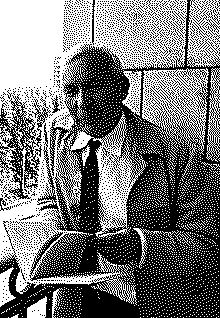

| годы жизни | 1903–1987 |
| страна | СССР · Москва |
| область | теория вероятностей · турбулентность · сложность |
| главное | аксиоматика вероятности (1933) · колмогоровская сложность |
| характер | строил школы — математические и обычные |
До него вероятность была наукой без фундамента.
три аксиомы 1933 года — и всё встало на место.
К 1930-м вероятность применяли уже триста лет, но строгого основания у неё не было. Что такое «вероятность» — частота, степень веры, доля площади? Спорили без конца. Колмогоров закрыл спор одним ходом: положил вероятность на теорию меры.
Три аксиомы1. Вероятность события — неотрицательное число. Вероятность всего пространства исходов равна единице. Вероятность объединения несовместных событий — сумма их вероятностей. Из этой горстки выводится всё прочее: и закон больших чисел, и цепи Маркова, и центральная предельная теорема получают точный смысл.
«Теория вероятностей может и должна строиться из аксиом — как геометрия или алгебра.» — Андрей Колмогоров, 1933
Аксиоматикой он не ограничился. Турбулентность, алгоритмическая сложность2, теория информации — Колмогоров заходил всюду и всюду оставлял фундамент, а не отделку. И столь же всерьёз занимался людьми: основал физматшколу для одарённых подростков, сам водил их в походы, плавал и ходил на лыжах до старости.
Случайность он под конец определил через сжатие: случайно то, что нельзя описать короче самого себя. Строка без закономерности — это строка, которую нечем укоротить.